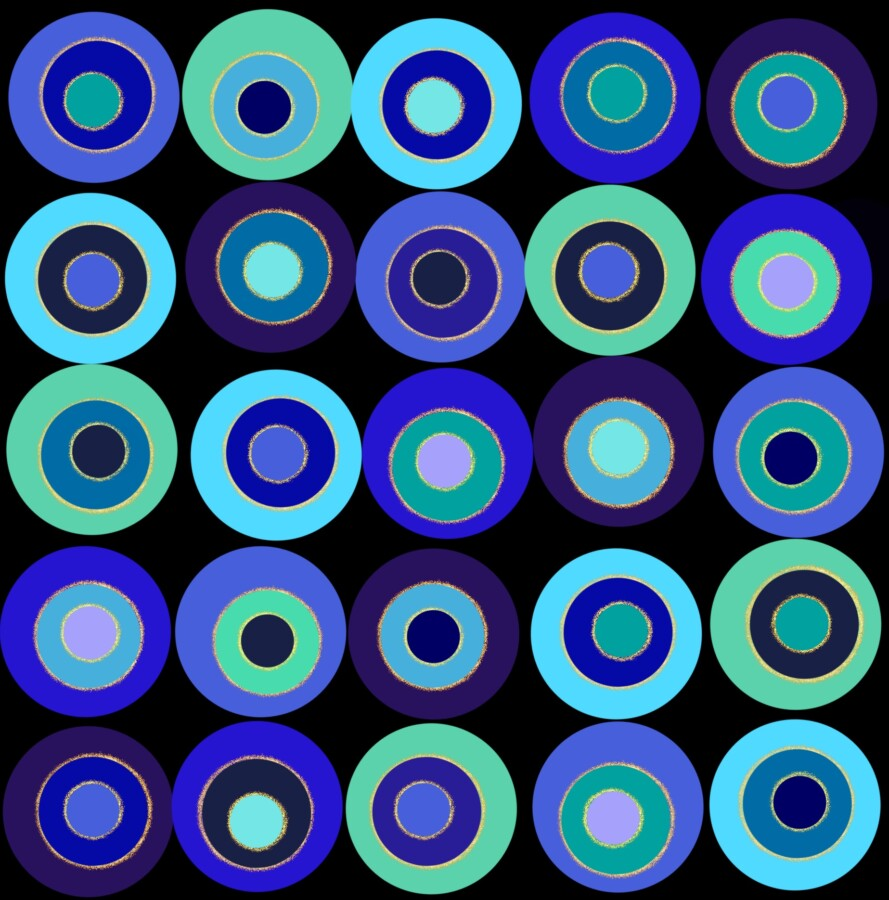

Hearth Artist Talk
Hearth: Kai Boone, Carmen Casillas, Fatimah Farooqi, Beck Lech, and Maddalena Piazza
Artist Talk: Saturday, May 16, 2026, 3:00 pm
Exhibition Dates: April 19, 2026 – June 6, 2026
Gallery Hours: Thursdays, Fridays, and Saturdays 1:00 – 5:00 pm
The Riverside Arts Center’s FlexSpace is pleased to present Hearth: Kai Boone, Carmen Casillas, Fatimah Farooqi, Beck Lech, and Maddalena Piazza, guest curated by RAC’s Gallery Assistant, Madelyn Roldan. Hearth brings together a group of artists whose works explore the intimate spaces of home, memory, and belonging. Through painting, sculpture, collage, and textile-based practices, the artists investigate the emotional and symbolic dimensions of domestic life. The exhibition centers on the idea of the “Hearth” not only as a physical site of warmth and shelter, but as a metaphor for connection, resilience, and personal history. Join exhibiting artists Kai Boone, Beck Lech, Maddalena Piazza and the curator for an artists talk on Saturday, May 16th at 3pm. The exhibition is on view through June 6, 2026. —–
Beck Lech (b. 2004) is a multidisciplinary artist and educator working primarily in painting, drawing, and collage. Born in Wheaton, Illinois, and currently completing her BFAAE at the School of the Art Institute of Chicago, her practice is situated within the suburban and urban Midwest that has shaped her lived experience. Lech’s work is a pragmatic study of her own reality, rendered through an absurdist visual language. She is drawn to the mundane–what is overlooked, unspoken and unacknowledged. Lech approaches image‐making as an act of reconstructing fragments of memory and identity into compositions that straddle the line of coherence. Across mediums, Lech’s imagery remains corporeal, uncanny and forthright. Her work is guided by a hyper‐awareness of self and surroundings that becomes both the catalyst and content. Together, her works are an organized chaos, visually acknowledging the facets of pedestrian life, providing an experience of relatable contemplation..
Instagram: @becklech__art
Carmen Casillas is an emerging artist currently studying at the School of The Art Institute of Chicago. Her work is inspired by her Mexican heritage and the influence of family. She explores memories and everyday experiences through a whimsical lens. Carmen enjoys working with acrylic paint and ceramic sculptures, and she is open to commissions. She aspires to one day open her own studio and gallery space that uplifts community and creative voices.